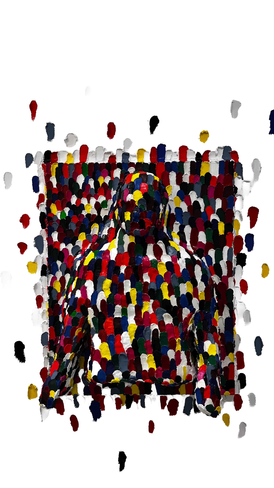
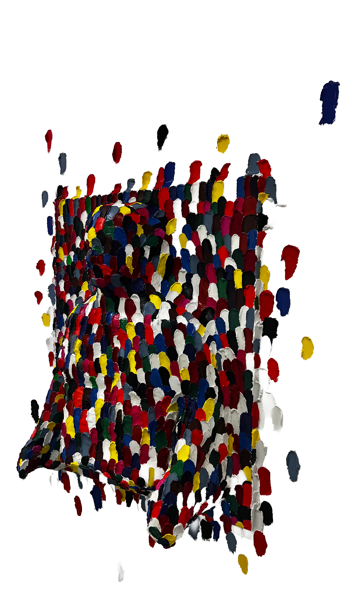

SCULPTURE
Personnalité identifiable
Tout au long de ma terminale en spécialité arts-plastiques, j’ai choisi d’orienté mon travail vers une thématique bien précise : Comment représenté plastiquement la place et l’impact des souvenirs sur l’humain ? J’ai représenté ici, ce qu’engendre l’accumulation de souvenirs sur un être quelconque. Cette superposition de peinture qui représente les expériences passées, les sentiments, laisse apparaître une masse, le corps d’un homme. Ces amas de souvenirs ne font qu’un avec ce corps, forment notre personnalité et façonnent notre identité.
Voir mes recherches
